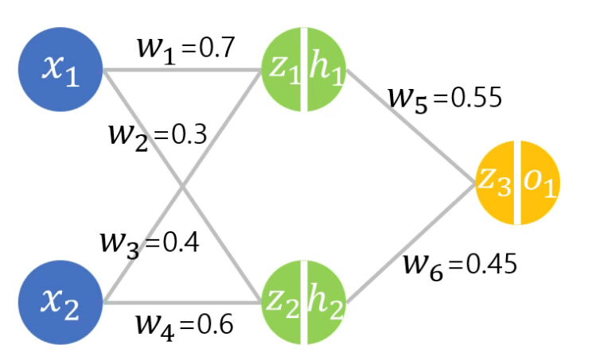

03. 신경망과 역전파
학습 안내 · 이전: 벡터·행렬과 확률 변환 · 다음: 교차엔트로피·KL·PPL
학습은 현재 가중치로 예측한 뒤, 손실이 각 가중치에 얼마나 민감한지 구하고, 손실을 낮추는 쪽으로 가중치를 바꾸는 과정이다. 순전파 → 손실 → 역전파 → 갱신의 네 역할을 구분하자. 원문 46~53쪽의 세 단계 설명에서 갱신을 별도 동작으로 풀어 쓴 것이다. 사전 배경은 가중합·sigmoid이며 2장에서 돌아볼 수 있다.
이 장을 마치면 작은 신경망의 중간값과 기울기를 구하고, 원문의 수치 오류와 반올림 차이를 구분하며, 학습률에 따른 결과를 예측할 수 있어야 한다. 먼저 1절로 계산을 익힌 다음 2~4절의 같은 신경망을 끝까지 따라간다. 미분 기호 ∂L/∂w는 다른 변수를 고정했을 때 w의 작은 변화가 손실 L에 미치는 비율이다.
1. 가장 작은 학습 한 번
보충 예제: 입력 x=2, 실제값 y=3, 가중치 w=1, 예측 ŷ=wx, 손실 L=(ŷ-y)²로 놓는다. 여기서는 표본 하나이므로 MSE와 같다.
순전파: ŷ=1×2=2
손실: L=(2-3)²=1
출력에 대한 기울기: dL/dŷ=2(ŷ-y)=-2
가중치에 대한 출력 변화: dŷ/dw=x=2
연쇄법칙: dL/dw=(dL/dŷ)(dŷ/dw)=-2×2=-4
학습률 η=0.1로 갱신: w_new=w-η(dL/dw)=1.4
다시 순전파: ŷ_new=2.8, L_new=0.04
기울기 -4는 w를 아주 조금 늘리면 현재 근처에서 손실이 줄어든다는 뜻이다. 역전파는 이 기울기를 계산한다. optimizer의 갱신은 그 뒤 w-η∇L 같은 규칙을 적용한다. 기울기를 계산했다고 w가 자동으로 바뀌는 것은 아니다.
원문 48쪽의 치타·사자·곰·사람 속도비 2×2×1.5=6은 연속된 비율을 곱하는 비유다. 실제 동물 속도 측정값으로 쓰지 않는다. 함수 L(o(z(w)))에서도 국소 변화율을 경로를 따라 곱한다. 경로가 여러 개라면 각 경로의 기여를 더한다. 속도비 비유만으로 이 합산까지 설명되지는 않는다.
2. 원문의 두 입력·두 은닉 뉴런 신경망
그림의 선을 따라 어느 가중치가 어느 입력에 붙는지 먼저 확인한다. 교차하는 선은 별도 뉴런이 아니다.

위 입력 x₁은 w₁로 h₁, w₂로 h₂에 연결된다. 아래 입력 x₂는 w₃로 h₁, w₄로 h₂에 연결된다. h₁과 h₂는 각각 w₅, w₆를 통해 출력으로 간다. z는 활성화 전 가중합, h와 o는 sigmoid를 통과한 값이다.
원문 조건: x₁=0.5, x₂=0.3, w=(0.7,0.3,0.4,0.6,0.55,0.45), 편향 없음, 모든 활성화 sigmoid, 목표 y=1, 제곱오차 L, 학습률 η=0.1이다. 아래 값은 중간에 반올림하지 않고 재계산한 뒤 표시한 것이다.
| 단계 | 계산 | 값 |
|---|---|---|
| 첫 은닉 가중합 | z₁=x₁w₁+x₂w₃ |
0.47 |
| 첫 은닉 출력 | h₁=σ(z₁) |
0.615384 |
| 둘째 은닉 가중합 | z₂=x₁w₂+x₂w₄ |
0.33 |
| 둘째 은닉 출력 | h₂=σ(z₂) |
0.581759 |
| 출력 가중합 | z₃=h₁w₅+h₂w₆ |
0.600253 |
| 예측 | o=σ(z₃) |
0.645714 |
| 손실 | L=(o-1)² |
0.125518 |
원문 47쪽의 o=0.645를 그대로 사용하면 손실 0.126025다. 이 값은 앞 단계의 절삭·근사에 따른 차이다. 정밀 재계산의 0.125518과 섞어서 같은 경로의 값인 것처럼 비교하지 않는다. 제곱오차 앞에 1/2을 넣는 다른 관례도 있지만 여기서는 넣지 않으므로 미분에 2가 남는다.
3. 출력에서 입력 방향으로 기울기를 재사용한다
출력에 가까운 두 가중치에는 같은 공통 인자가 있다. 이를 δ₃=∂L/∂z₃라고 쓰면 계산을 반복하지 않아도 된다.
∂L/∂o=2(o-1)
∂o/∂z₃=o(1-o)
δ₃=2(o-1)o(1-o)≈-0.162098
∂L/∂w₅=δ₃h₁≈-0.099753
∂L/∂w₆=δ₃h₂≈-0.094302
원문 정정, 49쪽: -0.71×0.229×0.615≈-0.01로 적혀 있지만 실제 곱은 -0.09999285, 약 -0.100이다. 그러므로 원문의 w₅_new=0.551은 이 오류에서 나온 값이다. 정밀 재계산의 갱신은 0.55-0.1×(-0.099753)≈0.559975다. 50쪽의 w₆ 기울기 -0.095와 갱신 0.4595는 반올림에 따른 근사이며 w₅의 10배 오류와 구분해야 한다.
은닉층으로 더 들어가려면 출력층 가중치와 은닉 활성화의 미분을 추가로 곱한다.
δ₁=∂L/∂z₁=δ₃w₅h₁(1-h₁)
δ₂=∂L/∂z₂=δ₃w₆h₂(1-h₂)
∂L/∂w₁=δ₁x₁ ∂L/∂w₃=δ₁x₂
∂L/∂w₂=δ₂x₁ ∂L/∂w₄=δ₂x₂
원문 51쪽의 w₁ 경로는 L→o→z₃→h₁→z₁→w₁ 순서다. 곱에 등장하는 w₅는 갱신 전의 0.55다. 한 번의 순전파에 대한 모든 기울기를 같은 옛 가중치에서 계산한 뒤 함께 갱신해야 한다. 중간에 w₅를 먼저 바꾸면 다른 계산 지점의 기울기가 섞인다.
| 가중치 | 기울기(약) | 동시 갱신 후(약) |
|---|---|---|
| w₁ | -0.010551 | 0.701055 |
| w₂ | -0.008874 | 0.300887 |
| w₃ | -0.006330 | 0.400633 |
| w₄ | -0.005325 | 0.600532 |
| w₅ | -0.099753 | 0.559975 |
| w₆ | -0.094302 | 0.459430 |
4. 새 가중치로 손실을 다시 계산해 확인한다
위 여섯 새 가중치를 같은 입력에 넣으면 새 출력은 약 0.6484, 새 손실은 약 0.12362다. 0.125518보다 작아 이번 한 번의 갱신에서는 개선되었다. 기울기의 부호만 확인하는 것으로 끝내지 않고 새 순전파까지 수행한다.
원문과의 구분: 52쪽은 w₃=0.4011, w₅=0.551 등을 사용해 손실 약 0.1245를 적었다. w₃의 정확한 갱신값은 0.400633이며, w₅는 앞에서 발견한 곱셈 오류를 반영한다. 원문 값으로도 손실이 조금 줄 수 있지만, 그것이 앞의 미분 계산이 정확하다는 증거는 아니다. 이 교재의 표와 새 손실은 일관된 정밀 계산을 기준으로 한다.
경사하강법 일반식은 w_(t+1)=w_t-η∇L(w_t)다. η는 학습률로 한 번에 이동하는 크기를 정한다. 원문 53쪽의 y=x² 그래프에서는 왼쪽 기울기가 음수라 오른쪽으로, 오른쪽 기울기가 양수라 왼쪽으로 움직이면 원점에 가까워진다.
정정: 원문의 0<α<1은 모든 문제에 통하는 안정 조건이 아니다. 1절의 L=(2w-3)²에서는 최적값 w*=1.5이고, 오차 e_t=w_t-1.5에 대해 e_(t+1)=(1-8η)e_t다. 따라서 이 예제는 0<η<0.25에서 수렴한다. η=0.25이면 양쪽으로 같은 거리만큼 오가며, η=1이면 첫 갱신 w=5, 손실 49로 커진다. 작아 보이는 학습률도 손실의 곡률에 따라 너무 클 수 있다. 일반 신경망에서는 매번 손실 감소나 전역 최적해 도달을 보장하지 않는다.
5. 작은 재현 활동
다음은 외부 라이브러리가 없는 Python 실행 예제다. 원문의 전체 실습을 대신 실행했다는 뜻이 아니며 이 장의 수치 예제만 재현한다.
from math import exp
def sigmoid(z): return 1 / (1 + exp(-z))
def forward(w):
h1 = sigmoid(0.5*w[0] + 0.3*w[2])
h2 = sigmoid(0.5*w[1] + 0.3*w[3])
o = sigmoid(h1*w[4] + h2*w[5])
return h1, h2, o, (o-1)**2
w = [0.7, 0.3, 0.4, 0.6, 0.55, 0.45]
h1, h2, o, loss = forward(w)
d3 = 2*(o-1)*o*(1-o)
d1 = d3*w[4]*h1*(1-h1)
d2 = d3*w[5]*h2*(1-h2)
g = [d1*0.5, d2*0.5, d1*0.3, d2*0.3, d3*h1, d3*h2]
new = [v-0.1*dv for v, dv in zip(w, g)]
print(round(loss, 6), round(forward(new)[3], 6))
예상 출력은 첫 손실 약 0.125518, 다음 손실 약 0.123618이다. 손으로 w₅ 한 항을 먼저 계산하고 출력값과 비교하자. 더 확인하려면 w₅만 ε=0.000001만큼 올리고 내린 두 손실의 차이를 2ε로 나눈다. 결과는 약 -0.099753으로 미분과 일치해야 한다. 이는 중앙 유한차분을 이용한 별도 검산이다.
6. 확인 질문과 해설
- 역전파와 가중치 갱신은 무엇이 다른가? (1절)
- w₁ 기울기에 왜 h₁의 sigmoid 미분과 w₅가 들어가는가? (3절)
- w₃의 기울기는 w₁ 기울기의 몇 배인가? (3절)
- 한 번 손실이 줄면 그때 사용한 미분이 정확했다고 결론 내려도 되는가? (4절)
- 1절에서 η=0.25면 새 w와 손실은? (4절)
해설: 1은 역전파가 기울기를 구하고 갱신이 이를 이용해 값을 바꾼다는 차이다. 2는 w₁에서 손실까지의 경로가 은닉 활성화와 출력 가중합을 통과하기 때문이다. 3은 같은 δ₁에 각각 0.3과 0.5를 곱하므로 0.6배다. 4는 아니다. 잘못된 이동도 우연히 손실을 줄일 수 있으므로 유한차분 등으로 기울기 자체를 점검해야 한다. 5는 w=2, 예측=4, 손실=1로 처음과 같다.
페이지별 상세 읽기
46 구조 · 47 순전파 · 48 연쇄법칙 · 49 w₅ 정정 · 50 w₆ · 51 w₁ · 52 재계산 · 53 학습률